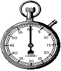
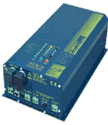

|
1.
Να χρησιμοποιήσει διάτρητες πλακέτες του εμπορίου. Αυτές
έχουν έτοιμες τρύπες σε κατάλληλες αποστάσεις και από κάτω χαλκό
είτε γύρω από τις τρύπες είτε σε κατακόρυφες γραμμές που περνάνε
από αυτές για να μπορεί κάποιος να κολλήσει πάνω τα εξαρτήματα
που θέλει. Οι συνδέσεις από το ένα εξάρτημα στο άλλο γίνονται
είτε με καλωδιάκια είτε με σύρμα είτε κόβοντας τα κομμάτια του
χαλκού που δεν χρειάζονται (αν πρόκειται για διάτρητες πλακέτες
με γραμμές).
Η μέθοδος αυτή είναι η πιο φτηνή και ενδείκνυται σε περιπτώσεις
πρωτοτύπων που αναμένεται να γίνουν κάποιες διορθώσεις μέχρι να
επιτευχθεί η ορθή λειτουργία.
2.
Πλακέτα με χαλκό. Αυτές οι πλακέτες έχουν ολόκληρη τη μία
επιφάνειά τους επιστρωμένη με ένα λεπτό φύλλο χαλκού. Για τα καλύτερα
αποτελέσματα, πρώτα κάνουμε τις τρύπες με ένα τρυπανάκι του εμπορίου.
 Βήμα
1ο. Για να γίνουν οι τρύπες σωστά είναι καλό να έχουμε έναν
οδηγό, δηλαδή είτε μία εκτύπωση με το που θα τοποθετηθούν τα εξαρτήματα,
είτε τα ίχνη του εξαρτήματος που θέλουμε να τοποθετήσουμε. π.χ.
για ένα ολοκληρωμένο κύκλωμα μπορούμε να πάρουμε ένα λεπτό χαρτί,
να πιέσουμε το ο.κ. πάνω του μέχρι να ανοίξουν οι τρύπες από τα
ποδαράκια και στη συνέχεια να χρησιμοποιήσουμε τα σημάδια από
στο χαρτί για να ανοίξουμε τις τρύπες. Βήμα
1ο. Για να γίνουν οι τρύπες σωστά είναι καλό να έχουμε έναν
οδηγό, δηλαδή είτε μία εκτύπωση με το που θα τοποθετηθούν τα εξαρτήματα,
είτε τα ίχνη του εξαρτήματος που θέλουμε να τοποθετήσουμε. π.χ.
για ένα ολοκληρωμένο κύκλωμα μπορούμε να πάρουμε ένα λεπτό χαρτί,
να πιέσουμε το ο.κ. πάνω του μέχρι να ανοίξουν οι τρύπες από τα
ποδαράκια και στη συνέχεια να χρησιμοποιήσουμε τα σημάδια από
στο χαρτί για να ανοίξουμε τις τρύπες.
Βήμα
2ο (και σημαντικότερο). Όταν πλέον έχουμε ολοκληρώσει το άνοιγμα
των τρυπών αυτές μπορούνε να μας οδηγήσουν για να ζωγραφίσουμε (!)
σωστά το κύκλωμά μας. Πρώτα καθαρίζουμε την πλακέτα με συρματάκι
για τα πιάτα ώστε να είναι καθαρή και λεία. Στη συνέχεια με ένα
ανεξίτηλο μαρκαδόρο που προστατεύει από το νερό (waterproof) κάνουμε
τις απαραίτητες συνδέσεις τις οποίες στην προηγούμενη περίπτωση
θα κάναμε με συρματάκια. π.χ. Όταν το θεωρητικό λέει ότι πρέπει
να συνδεθεί το pin3 του IC1 με το μεσαίο ποδαράκι του τρανζίστορ
TR5 εμείς θα ενώσουμε την τρυπούλα του pin3 του IC1 με την τρυπούλα
που αντιστοιχεί στο μεσαίο ποδαράκι του TR5. Το πως θα καταφέρουμε
να κάνουμε όλες τις απαραίτητες συνδέσεις σε μία μόνο επιφάνεια
χαλκού είναι μια τέχνη που μαθαίνεται σιγά-σιγά. Αρχίζουμε πάντως
από τις προφανείς συνδέσεις δηλαδή αυτές που είναι πολύ κοντά μεταξύ
τους και αφήνουμε για το τέλος τις συνδέσεις των γραμμών τροφοδοσίας
οι οποίες είναι οι πιο μεγάλες. (Στην περίπτωση που κάποιες συνδέσεις
δεν χωράνε να γίνουν σε μία επιφάνεια χαλκού, βάζουμε jumperακια
δηλαδή συρματάκια στην από πάνω πλευρά του χαλκού ή αν οι συνδέσεις
που απομένουν είναι πολλές, χρησιμοποιούμε πλακέτες διπλής όψεως,
δηλαδή με χαλκό και από τις δύο πλευρές αλλά αυτό είναι πολύ σπάνιο
για ερασιτεχνικές κατασκευές τις οποίες καλύπτει κυρίως αυτή η διαδικασία).
Βήμα
3ο. "Η αποχάλκωση" Όταν πλέον έχουμε ζωγραφίσει όλο
το κύκλωμα το βυθίζουμε σε ένα διάλυμα ένυδρου τριχλωριούχου σιδήρου
γνωστό και ως "υγρό για αποχάλκωση". Στα σημεία που έχουμε
ζωγραφίσει, το υγρό δεν ακουμπά (λόγω του ότι το στυλό είναι waterproof)
και δεν αλλοιώνει το χαλκό. Στα μη ζωγραφισμένα σημεία τον φθείρει
και στο τέλος έχουμε την πλακέτα με χαλκό - σύρμα μόνο εκεί που
ζωγραφίσαμε. Εκτός από το παραπάνω χημικό υπάρχουν και αρκετά άλλα
που μπορεί να αποχαλκώνουν την πλακέτα ακόμα και σε 5 δευτερόλεπτα
αλλά ο ένυδρος τριχλωριούχος σίδηρος (ή ότι αντίστοιχο έχει το κατάστημα
ηλεκτρονικών σας) είναι ο πιο ασφαλής και διαδεδομένος τρόπος. Καλό
είναι το υγρό αυτό να είναι ζεστό και επιπλέον να μετακινούμε ελαφρά
την πλακέτα μέσα στο υγρό ώστε να επιταχυνθεί η διαδικασία. Μετά
το τέλος της αποχάλκωσης καθαρίζουμε και πάλι την πλακέτα με συρματάκι
για τα πιάτα και είναι έτοιμη για να κολήσουμε τα εξαρτήματά μας
πάνω της.
Ο δεύτερος αυτός τρόπος είναι ο πιο διαδεδομένος για σοβαρά πρωτότυπα
που ξέρουμε ότι θα δουλέψουν χωρίς πολλές αλλαγές ή μικρά - μεσαία
κυκλώματα από περιοδικά. Είναι πολύ αξιόπιστος και τα αποτελέσματά
του μπορεί (και πρέπει) να είναι πολύ εντυπωσιακά. Παρόλη την
εκτενή διαδικασία, δεν διαρκεί συνήθως (με λίγη εμπειρία) περισσότερο
από μία ώρα.
3.
Φωτοευαίσθητες πλακέτες. Αυτές οι πλακέτες είναι ακριβώς
ίδιες με τις παραπάνω μόνο που πάνω από το στρώμα του χαλκού έχουν
ένα στρώμα φωτοευαίσθητου υλικού όμοιου με αυτού των φωτογραφικών
film (ευαίσθητο όμως στην περιοχή των UV). Εναλλακτικά, παίρνουμε
μια κλασική πλακέτα με χαλκό, την ψεκάζουμε με φωτοευαίσθητο spray
και την αφήνουμε να στεγνώσει σε σκοτεινό περιβάλλον (πιο οικονομικός
τρόπος αλλά λιγότερο αξιόπιστος). Σε αυτή τη περίπτωση χρειάζεται
να έχουμε το σχέδιο της πλακέτας έτοιμο από κάποιο περιοδικό ή
εκτύπωση από το PC και να το έχουμε φωτοτυπήσει σε διαφάνεια.
Το φωτοευαίσθητο υλικό παίζει το ρόλο του μαρκαδόρου της προηγούμενης
περίπτωσης. Συγκεκριμένα όπου η διαφάνεια έχει ζωγραφισμένο σύρμα,
το φωτοευαίσθητο υλικό δεν "καίγεται" και κατά την εμφάνισή
του παραμένει. Στην φάση της αποχάλκωσης τώρα, όπου έχει παραμείνει
το φωτοευαίσθητο υλικό δεν επηρεάζει το υγρό με συνέπεια να παραμένει
ο χαλκός και να σχηματίζεται τελικά η πλακέτα που είχαμε στη διαφάνεια.
Η διαδικασία έχει ως εξής:
Βήμα
1ο. Τοποθετούμε τη διαφάνεια πάνω στη πλακέτα (αφού αφαιρέσουμε
το προστατευτικό της κάλυμμα) και την εκθέτουμε για 10 λεπτά σε
υπεριώδη ακτινοβολία (από μια κατάλληλη λάμπα π.χ. την HPL-N της
PHILIPS την οποία βρίσκουμε σε καταστήματα ανταλλακτικών ηλεκτρονικών
ή ακόμα και σε καταστήματα με λάμπες, πιθανώς μετά από παραγγελία).
Βήμα
2ο. ( * Προσοχή, πρέπει να γίνει σε σκοτεινό περιβάλλον) Εμφανίζουμε
την πλακέτα βάζοντας την στο ειδικό υγρό για εμφάνιση πλακετών
που βρίσκουμε σε καταστήματα ηλεκτρονικών. Μετά από 1 λεπτό το
σχέδιο της διαφάνειας εμφανίζεται ως δια μαγείας μπροστά στα μάτια
μας. Αν βλέπουμε κανένα μικρό κενό ή κόψιμο μπορούμε να το διορθώσουμε
τώρα με μαρκαδόρο.
Βήμα
3ο. Το βήμα της αποχάλκωσης όπως περιγράφηκε στην μέθοδο 2.
Βήμα
4ο. Στο τέλος αυτή τη φορά τρυπάμε την πλακέτα με οδηγό τα
pads (νησίδες) του χαλκού.
Η διαδικασία αυτή είναι αρκετά γρήγορη (αν παραβλέψεις βέβαια τη
σχεδίαση του κυκλώματος στο PC) και η πιο ποιοτική. Αυτή χρησιμοποιούν
και οι επαγγελματίες, με πιο ισχυρές λάμπες και πιο ακριβά χημικά
εμφάνισης και αποχάλκωσης. Είναι βέβαια και η ποιο ακριβή αφού οι
φωτοευαίσθητες πλακέτες κοστίζουν ακριβότερα από όλες τις άλλες.
Θα χρησιμοποιήσετε αυτή τη τεχνική για πλακέτες από περιοδικά ή
PC όταν είναι αρκετά μεγάλες ή όταν θέλουμε μεγάλη ακρίβεια και
φυσικά ζητάμε επαγγελματική και άψογη ποιότητα.
| Παρατηρήσεις |
- Υπάρχουν και καταστήματα που τυπώνουν τις πλακέτες σας
αλλά το κόστος τους είναι (σχετικά) ασύμφορο για μικρές
ποσότητες, ακόμα περισσότερο αν τους ζητήσετε να σας τη
σχεδιάσουν κιόλας από το θεωρητικό σας κύκλωμα.
- Πολύ χρόνο και χρήμα μπορεί να σας εξοικονομήσει ο Η/Υ
μιας κι εκεί μπορείτε να κάνετε άπειρες δοκιμές με μηδενικό
κόστος μέχρι να ελαχιστοποιήσετε το μέγεθος της πλακέτας
σας και φυσικά θα είστε σίγουρος ότι δεν ξεχάσατε συνδέσεις
και ότι το κύκλωμα δουλεύει (αν το έχετε εξομοιώσει πιο
πριν).
- Αν θέλετε οι πλακέτες σας να λάμπουν στον χρόνο και
να μη φθείρονται μη ξεχάσετε να τις περάσετε μετά την
συγκόλληση των εξαρτημάτων και την επαλήθευση ότι δουλεύει
με κάποιο προστατευτικό βερνίκι. Θα τις κάνει να φαίνονται
καταπληκτικές και θα τις προστατεύει από την οξείδωση
και τις ηλεκτροστατικές εκφορτίσεις.
- Υπάρχουν πολλές ακόμα μικρές συμβουλές και λεπτομέρειες
σχετικές με την κατασκευή πλακετών. Τα παραπάνω αποτελούν
όλες τις βασικές γνώσεις που πρέπει κανείς να έχει όμως:
Η κατασκευή πλακετών είναι τέχνη και
το βασικό συστατικό για μια
επιτυχημένη πλακέτα είναι μόνο η εμπειρία
|
|